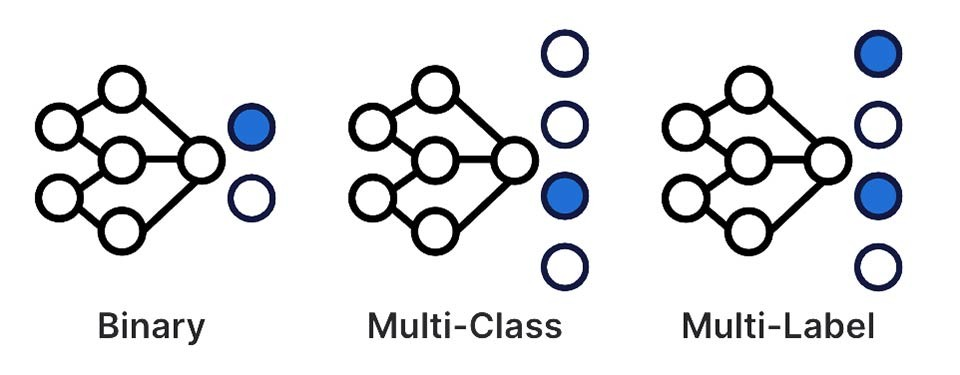
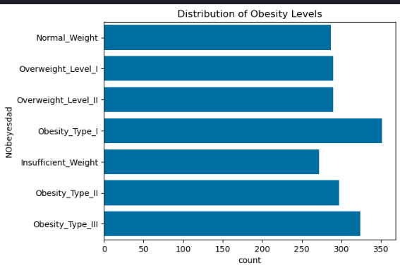
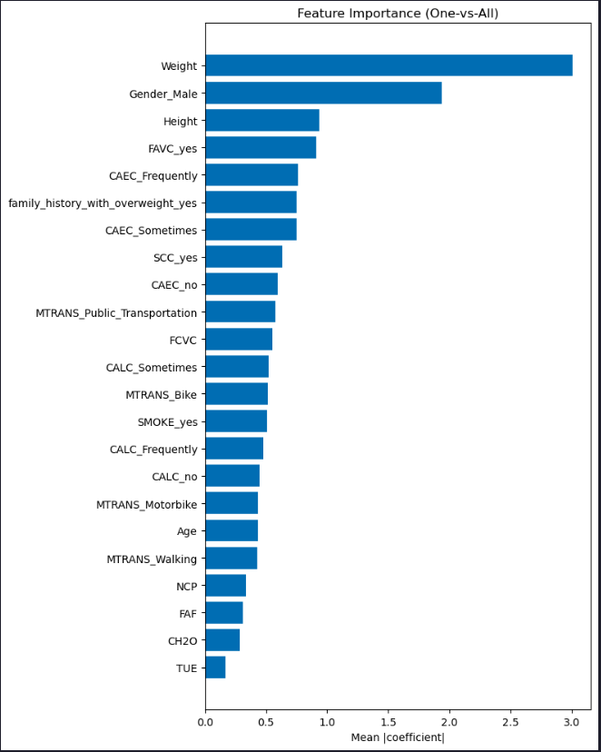
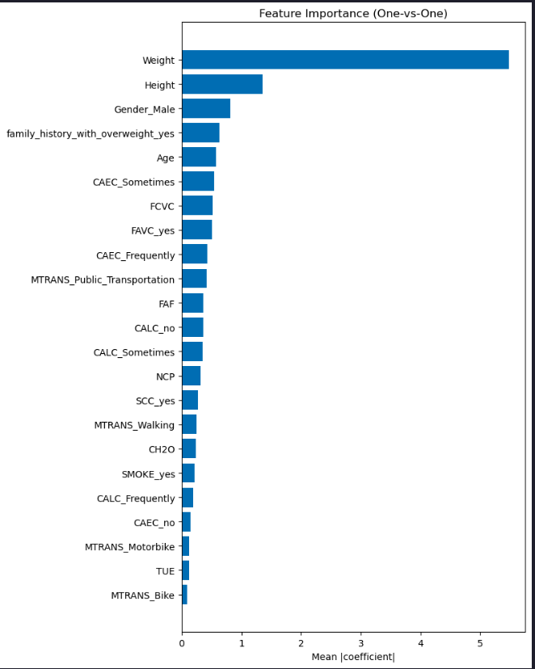

Multi-class Classification
Machine Learning
AI Engineering
Strategies for multi-class classification using logistic regression, including preprocessing, modeling, and evaluation.

Estimated reading time: ~30 minutes
Multi-class Classification
Objectives
- Understand one-hot encoding for categorical variables
- Implement logistic regression for multi-class classification using One-vs-All (OvA) and One-vs-One (OvO) strategies
- Evaluate model performance using appropriate metrics
Dataset
Obesity Risk Prediction dataset from UCI Library. The dataset contains 17 attributes and 2,111 samples.
The attributes of the dataset are descibed below.| Variable Name | Type | Description |
|---|---|---|
| Gender | Categorical | |
| Age | Continuous | |
| Height | Continuous | |
| Weight | Continuous | |
| family_history_with_overweight | Binary | Has a family member suffered or suffers from overweight? |
| FAVC | Binary | Do you eat high caloric food frequently? |
| FCVC | Integer | Do you usually eat vegetables in your meals? |
| NCP | Continuous | How many main meals do you have daily? |
| CAEC | Categorical | Do you eat any food between meals? |
| SMOKE | Binary | Do you smoke? |
| CH2O | Continuous | How much water do you drink daily? |
| SCC | Binary | Do you monitor the calories you eat daily? |
| FAF | Continuous | How often do you have physical activity? |
| TUE | Integer | How much time do you use technological devices such as cell phone, videogames, television, computer and others? |
| CALC | Categorical | How often do you drink alcohol? |
| MTRANS | Categorical | Which transportation do you usually use? |
| NObeyesdad | Categorical | Obesity level |
Preprocessing
import pandas as pd
import numpy as np
import matplotlib.pyplot as plt
import seaborn as sns
from sklearn.model_selection import train_test_split
from sklearn.preprocessing import OneHotEncoder, StandardScaler
from sklearn.linear_model import LogisticRegression
from sklearn.multiclass import OneVsOneClassifier
from sklearn.metrics import accuracy_score
import warnings
warnings.filterwarnings('ignore')
file_path = "https://cf-courses-data.s3.us.cloud-object-storage.appdomain.cloud/GkDzb7bWrtvGXdPOfk6CIg/Obesity-level-prediction-dataset.csv"
data = pd.read_csv(file_path)Exploratory Data Analysis (EDA)
# Distribution of target variable
sns.countplot(y='NObeyesdad', data=data)
plt.title('Distribution of Obesity Levels')
plt.show()
Feature Scaling and Encoding
continuous_columns = data.select_dtypes(include=['float64']).columns.tolist()
scaler = StandardScaler()
scaled_features = scaler.fit_transform(data[continuous_columns])
scaled_df = pd.DataFrame(scaled_features, columns=scaler.get_feature_names_out(continuous_columns))
scaled_data = pd.concat([data.drop(columns=continuous_columns), scaled_df], axis=1)
categorical_columns = scaled_data.select_dtypes(include=['object']).columns.tolist()
categorical_columns.remove('NObeyesdad')
encoder = OneHotEncoder(sparse_output=False, drop='first')
encoded_features = encoder.fit_transform(scaled_data[categorical_columns])
encoded_df = pd.DataFrame(encoded_features, columns=encoder.get_feature_names_out(categorical_columns))
prepped_data = pd.concat([scaled_data.drop(columns=categorical_columns), encoded_df], axis=1)
prepped_data['NObeyesdad'] = prepped_data['NObeyesdad'].astype('category').cat.codes
X = prepped_data.drop('NObeyesdad', axis=1)
y = prepped_data['NObeyesdad']Train/Test Split
X_train, X_test, y_train, y_test = train_test_split(X, y, test_size=0.2, random_state=42, stratify=y)Modeling
One-vs-All (OvA)
model_ova = LogisticRegression(multi_class='ovr', max_iter=1000)
model_ova.fit(X_train, y_train)
y_pred_ova = model_ova.predict(X_test)
print("OvA Accuracy:", accuracy_score(y_test, y_pred_ova))One-vs-All (OvA) Strategy Accuracy: 76.12%
One-vs-One (OvO)
model_ovo = OneVsOneClassifier(LogisticRegression(max_iter=1000))
model_ovo.fit(X_train, y_train)
y_pred_ovo = model_ovo.predict(X_test)
print("OvO Accuracy:", accuracy_score(y_test, y_pred_ovo))One-vs-One (OvO) Strategy Accuracy: 92.2%
Experimenting with different test sizes
# Experiment with different test sizes
for test_size in [0.1, 0.3]:
X_train, X_test, y_train, y_test = train_test_split(X, y, test_size=test_size, random_state=42, stratify=y)
model_ova = LogisticRegression(multi_class='ovr', max_iter=1000)
model_ova.fit(X_train, y_train)
y_pred = model_ova.predict(X_test)
acc = accuracy_score(y_test, y_pred)
print(f"Test Size: {test_size}")
print(f"Accuracy: {acc:.4f}")
print("-"*30)Test Size: 0.1
Accuracy: 0.7594
Test Size: 0.3
Accuracy: 0.7492
Feature Importance
# Feature importance plots for OvA and OvO models
# Ensure models are trained (uses previously trained models if available)
if 'model_ova' not in globals():
model_ova = LogisticRegression(multi_class='ovr', max_iter=1000)
model_ova.fit(X_train, y_train)
# OvA feature importance (mean absolute coefficients across classes)
ova_importance = np.mean(np.abs(model_ova.coef_), axis=0)
order = np.argsort(ova_importance)
plt.figure(figsize=(8, 10))
plt.barh(np.array(X.columns)[order], ova_importance[order])
plt.title("Feature Importance (One-vs-All)")
plt.xlabel("Mean |coefficient|")
plt.tight_layout()
plt.show()
# OvO feature importance
if 'model_ovo' not in globals():
model_ovo = OneVsOneClassifier(LogisticRegression(max_iter=1000))
model_ovo.fit(X_train, y_train)
coefs = np.array([est.coef_[0] for est in model_ovo.estimators_])
ovo_importance = np.mean(np.abs(coefs), axis=0)
order = np.argsort(ovo_importance)
plt.figure(figsize=(8, 10))
plt.barh(np.array(X.columns)[order], ovo_importance[order])
plt.title("Feature Importance (One-vs-One)")
plt.xlabel("Mean |coefficient|")
plt.tight_layout()
plt.show()
